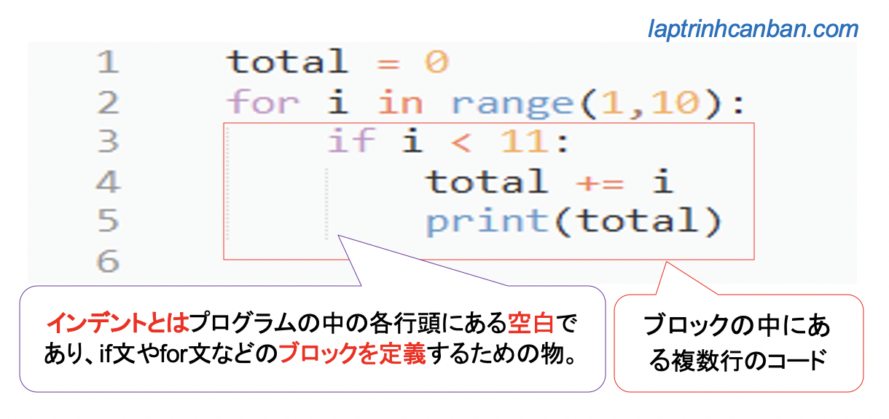
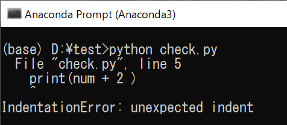

記事掲載：https://laptrinhcanban.com/ja
Pythonにおけるインデントの使用方法のチュートリアルです。このレッスンで、インデントを使用して、Pythonのif文やfor文などのブロックを定義する方法を学習しましょう。
Pythonにおけるインデントとは
Pythonにおけるインデントとはプログラムの中の各行頭にある空白のことです。if文やfor文などのブロックを定義するためにインデントが使用されます。
Pythonのif文やfor文などには、条件式を設置し、条件式が真のとき、一つ若しくは複数行のコードが実行されます。
そしてそれらのコードのまとめた物をブロックと呼ばれています。Pythonではブロックを定義するためインデントを使用します。

{}記号を使用してブロックを定義する他のプログラミング言語とは異なり、Pythonでのブロックの定義にはインデントしか使用できないため、Pythonでのインデントの役割は非常に重要です。
Pythonで間違ったインデントを使用すると、ブロックが認識されなくなり、Pythonでunexpected indent trong pythonといった予期しないインデントエラーが発生し、プログラムが中断されます。
インデントを使用してPythonでブロックを定義する
Pythonでは、ifステートメントやforステートメントなど、1つ以上のサブステートメントを含むステートメントは、複合ステートメントと呼ばれます。さらに、whileステートメントとtryステートメント、または関数定義とクラス定義も複合ステートメントです。
複合ステートメントでは、ブロックを使用して、サブステートメントの実行を開始する場所と終了する場所を決定します。そして、インデントを使用して、Pythonでこのブロックを定義します。
if 条件式:
ifブロックのステートメント１
ifブロックのステートメント２
同じ位置でインデントされたステートメントは、同じブロックとして扱われます。また、インデントの量が異なる場合は、別々のブロックで考慮されます。
したがって、そのブロック内の残りのステートメントとは異なるインデントを持つステートメントをブロックに書き込むと、予期しないインデントエラーが発生します。
if 条件式: |
ifステートメントブロックにさらにifステートメントを記述したい場合は、次のようにインデントを深くして記述します。
if 条件式１:
if1のステートメント１
if1のステートメント２
if 条件式２:
if２のステートメント１
if２のステートメント２
if1のステートメント３
たとえば、インデントを使用して、次のifステートメントでブロックを定義します。
num = 10 |
Pythonで予期しないインデントエラー|Unexpected indentエラー
Unexpected indentエラーとは誤ったインデントによって引き起こされたエラーであり、構文エラーの形式と見なされます。
たとえば、次のブロックでは、5行目のprintステートメントのインデント位置が同じifブロック内の他のステートメントと異なるため、エラーが発生します。
num = 10 |
Unexpected indentが返されます:

このエラーが発生した場合は、同じブロック内のステートメントが同じ位置でインデントされているかどうかを確認して修正してください。
たとえば、上記のプログラムのインデント位置を次のように修正します。
num = 10 |
その結果、予期しないインデントエラーが修正され、出力が次のように画面に出力されます。
10 |
Pythonにおけるインデントの数
Pythonではタブまたはスペースを使用してインデントを行いますが、Pythonではインデントの数を制限するルールはありません。たとえば、Pythonでインデントするために2つのスペースまたは4つのスペースを使用できます。言い換えれば、Pythonにはインデントの標準的な概念はありません。
選択するインデントの数について混乱している場合は、次のPythonDoccumentsWebサイトでインデントの詳細を確認してください。
ただし、通常、プログラマーはPythonでインデントするために4倍のスペースバーを使用するため、彼らを真似して、Pythonでインデントするために4つのスペースバーを使用すると無難ですね。
まとめ
上記でKiyoshiは、Pythonにおけるインデントの使用方法について説明しました。レッスンの内容をよりよく理解するために、各例文を使って練習してください。
そして、次のレッスンでPythonの知識についてもっと学びましょう。
URL Link
ホーム › 初心者向けのpython学習>>03. pythonの基礎知識